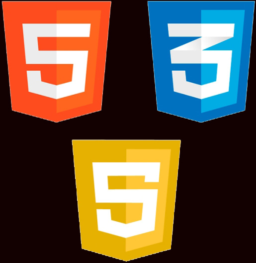

Обо мне

Я студент 2 курса Московсого Политехнического университета, обучаюсь по программе "Системная и программная инженерия". Основной упор в этой программе делается на разработку аппаратного и программного обеспечения и работы с ними.
НавыкиОсновными своими навыками я считаю умение разбивать задачу на несколько частей, что упрощает составление алгоритма решения этой задачи. Подробнее |
|  |
ТехнологииВ настоящий момент владею технологиями разработки ПО на языке C++, занимаюсь изучением 1С и умею заниматься вёрсткой сайтов на следующих языках:
|